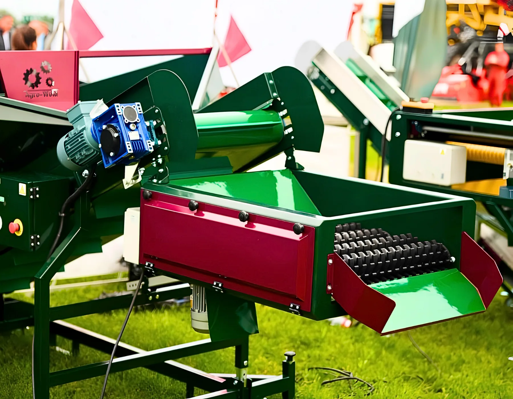

01 · Co to jest separator kamieni i ziemi i jak działa?
Separator kamieni i ziemi to urządzenie umieszczane na starcie linii produkcyjnej, które oddziela cięższe i twardsze zanieczyszczenia — kamienie, grudki ziemi, natkę, drobne kamyki — od warzyw, zanim trafią one do dalszych etapów obróbki.
Zasada działania opiera się na geometrii i ruchu. Warzywa przesuwają się po zestawie rolek w kształcie gwiazdy (separator rolkowy) lub przez system wibracyjny. Zanieczyszczenia stałe — cięższe i znacznie mniejsze kształtem niż warzywo — wypadają przez szczeliny między rolkami do pojemnika lub przenośnika odpadowego ustawionego pod maszyną. Produkt czysty przechodzi dalej do kolejnego etapu linii.
W ofercie Agro-Weld separator rolkowy z rolkami w kształcie gwiazdy usuwa skutecznie nie tylko ziemię i drobne kamienie, ale też natkę z marchwi i pietruszki — co ogranicza pracę ręczną przy dalszych etapach selekcji.
02 · Dlaczego separator to pierwszy krok w linii do warzyw korzeniowych?
Ziemniaki, marchew, buraki i cebula zebrane z pola zawierają od kilku do kilkunastu procent zanieczyszczeń — ziemi, kamieni i resztek roślinnych. Bez separacji na starcie linii:
- drobne kamienie i grudki ziemi uszkadzają szczotki w czyszczarce, skracając ich żywotność nawet kilkukrotnie,
- zalegająca ziemia zatyka szczeliny przenośników i powoduje blokady,
- zanieczyszczenia trafiają na stół selekcyjny, spowalniając pracę operatorów,
- jakość mycia jest niższa, bo czyszczarka musi jednocześnie usuwać zarówno ziemię, jak i oczyszczać powierzchnię warzywa.
Separator pracuje jako filtr wstępny: usuwa najtrudniejsze zanieczyszczenia raz, na początku, zanim surowiec trafi w głąb linii. To tańsze i bardziej efektywne niż radzenie sobie z konsekwencjami ich obecności na każdym kolejnym etapie.
03 · Rodzaje separatorów – podwieszany, rolkowy, wibracyjny
W liniach do warzyw korzeniowych stosuje się kilka typów separatorów, różniących się zasadą działania i sposobem montażu.
| Typ separatora | Zasada działania | Skuteczność | Typowe zastosowanie | Montaż |
|---|---|---|---|---|
| Rolkowy (gwiazdowy) | Rolki w kształcie gwiazdy oddzielają zanieczyszczenia | Wysoka – usuwa ziemię, kamienie i natkę | Ziemniaki, marchew, pietruszka, buraki | Stacjonarny lub podwieszany |
| Podwieszany lub na własnej konstrukcji z regulowaną wysokością | Montowany przy wysypie kosza przyjęciowego | Bardzo dobra – separacja już na starcie linii | Wszystkie warzywa korzeniowe | Przy koszu przyjęciowym |
| Wibracyjny | Drgania przesiewają zanieczyszczenia przez sito | Dobra przy suchej ziemi | Ziemniaki, cebula | Stacjonarny |
Separator podwieszany – co wyróżnia to rozwiązanie?
Separator podwieszany to wariant, w którym urządzenie jest zamontowane bezpośrednio przy wysypie kosza przyjęciowego lub przenośnika. Nie wymaga osobnego stanowiska i automatyzuje wstępną separację bez angażowania operatora. Pod separatorem ustawia się skrzynię lub przenośnik odpadowy zbierający oddzielone zanieczyszczenia — co ułatwia utrzymanie czystości na linii.
Separatory podwieszane dostępne są jako opcja do koszów KP1500, KP3000 i KP5000G. Gotową realizację kosza przyjęciowego z separatorem można obejrzeć w sekcji realizacji.
04 · Jakie zanieczyszczenia usuwa separator kamieni i ziemi?
Separator usuwa zanieczyszczenia różnego rodzaju, zależnie od surowca i warunków pracy:
- Drobne kamienie i żwir — najgroźniejsze dla maszyn; mogą uszkodzić szczotki, rolki i taśmy
- Grudki ziemi — przy wilgotnych zbiorach mogą ważyć prawie tyle co warzywo
- Natka i resztki łodyg — szczególnie przy marchwi i pietruszce; rolki gwiazdowe skutecznie wyrywają natkę bez uszkadzania warzywa
- Drobne kamyki i żwir — frakcja trudna do usunięcia ręcznie, separator eliminuje ją automatycznie
Dostępne szerokości robocze to SE-580 (58 cm, do 6 t/h), SE-880 (88 cm, do 8 t/h) i SE-1080 (108 cm, do 10 t/h). Wysokość każdego modelu reguluje się względem nachylenia kosza przyjęciowego, co pozwala dostosować kąt pracy do rodzaju surowca.
05 · Separator kamieni a jakość mycia i czyszczenia w dalszych etapach linii
Skuteczna separacja zanieczyszczeń na wstępie przekłada się bezpośrednio na efektywność myjki do warzyw lub czyszczarki szczotkowej na kolejnym etapie. Czyszczarka, do której trafia produkt już pozbawiony kamieni i grubszej ziemi, może skupić się na oczyszczaniu powierzchni warzywa — a nie na usuwaniu grubych zanieczyszczeń, do których nie była przeznaczona.
Przekłada się to na: dłuższą żywotność szczotek, lepszą jakość czyszczenia, mniej przestojów i niższe koszty serwisu. Inwestycja w separator zwraca się poprzez ograniczenie kosztów eksploatacyjnych maszyn na dalszych etapach linii.
Więcej o tym, jak wybrać kosz przyjęciowy — urządzenie, przed którym najczęściej montuje się separator — przeczytasz w osobnym poradniku.
06 · Obsługa i konserwacja separatora – na co zwrócić uwagę?
Separator ziemi i kamieni należy do maszyn o prostej budowie i stosunkowo niskich wymaganiach serwisowych. Kilka zasad pozwala utrzymać go w dobrej kondycji przez cały sezon:
Regularne czyszczenie pod maszyną. Pod separatorem zbierają się ziemia, kamienie i resztki roślinne. Codzienne czyszczenie pojemnika lub przenośnika odpadowego zapobiega zaleganiu brudu i utrzymuje porządek na linii.
Kontrola rolek przed sezonem. Rolki w kształcie gwiazdy zużywają się przy intensywnej pracy z kamieniami i twardą glebą. Przed startem sezonu warto skontrolować stan rolek i wymienić te z wyraźnymi śladami zużycia — zapobiegnie to przestojom w szczycie zbiorów.
Regulacja kąta i wysokości separatora. Separator podwieszany można regulować względem kąta nachylenia kosza przyjęciowego. Przy zmianie surowca (np. z ziemniaków na marchew) warto sprawdzić, czy ustawienie jest optymalne dla nowego produktu — zbyt mały kąt może powodować, że część zanieczyszczeń przedostaje się dalej zamiast wypadać przez szczeliny.
Plandeka dociskowa. Standardowe wyposażenie separatora Agro-Weld obejmuje plandekę dociskową ograniczającą unoszenie się kurzu podczas separacji suchej ziemi. Regularne sprawdzanie stanu plandeki i jej naprawa po ewentualnych uszkodzeniach poprawia skuteczność separacji i ogranicza pylenie na hali produkcyjnej — co ma znaczenie zarówno dla komfortu pracy operatorów, jak i dla higieny całej linii.
07 · O firmie Agro-Weld
Agro-Weld to polski producent maszyn do czyszczenia, mycia, sortowania i pakowania warzyw oraz owoców, z siedzibą w Środzie Wielkopolskiej (Wielkopolska). W zakładzie w Środzie Wielkopolskiej powstają separatory ziemi i kamieni, kosze przyjęciowe oraz kompletne linie technologiczne dla sortowni, pakowni i gospodarstw. Klienci otrzymują pełną obsługę: projekt, produkcję, montaż i uruchomienie maszyn na miejscu.
08 · FAQ – Separator kamieni i ziemi
Co to jest separator kamieni i ziemi?
Separator kamieni i ziemi to urządzenie umieszczane na starcie linii produkcyjnej, które oddziela cięższe zanieczyszczenia — drobne kamienie, grudki ziemi i resztki roślinne — od warzyw, zanim trafią one do dalszych etapów obróbki. Chroni kolejne maszyny i poprawia jakość czyszczenia.
Dlaczego separator jest ważny na początku linii?
Bez separacji zanieczyszczeń na wstępie drobne kamienie i grudki ziemi uszkadzają szczotki w czyszczarce, zatykają przenośniki i obniżają skuteczność mycia. Separator usuwa najtrudniejsze zanieczyszczenia raz, na początku — taniej i skuteczniej niż radzenie sobie z ich konsekwencjami na każdym kolejnym etapie linii.
Jakie rodzaje separatorów stosuje się w liniach do warzyw?
Najczęściej stosuje się separatory rolkowe z rolkami gwiazdowymi oraz separatory podwieszane montowane bezpośrednio przy koszu przyjęciowym. Różnią się zasadą działania i sposobem montażu, ale oba skutecznie oddzielają drobne kamienie, ziemię i natkę od surowca.
Czy separator kamieni jest potrzebny przy każdym warzywie?
Separator jest szczególnie istotny przy warzywach korzeniowych zbieranych bezpośrednio z pola — ziemniakach, marchwi, burakach — które naturalnie transportują ze sobą ziemię i kamienie. Przy warzywach dostarczanych już oczyszczonych jego rola jest mniejsza.
Gdzie w linii produkcyjnej umieszcza się separator?
Separator umieszcza się zaraz po koszu przyjęciowym, przed czyszczarką szczotkową lub myjką. Wersja podwieszana montowana jest bezpośrednio przy wysypie kosza, co eliminuje potrzebę osobnego stanowiska dla tego urządzenia.
Chcesz dowiedzieć się, który model separatora sprawdzi się przy Twoim surowcu? Sprawdź separatory ziemi i kamieni w katalogu lub wyślij zapytanie — przygotujemy wycenę dopasowaną do skali Twojej linii.